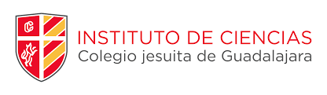

<main>

    <div class ="container">
        
        <div>
          <div class="section">
            <h3>Educación</h3>
          </div>
          <br>
          <label>Educación básica y media-superior: Instituto de Ciencias (2005-2020)</label><br><br>
          <br>
          <label>Educación superior: Actualmente cursando el sexto semestre de la carrera Ingeniería en Sistemas Computacionales en ITESO, Universidad Jesuita de Guadalajara (año estimado de graduación 2024) </label><br><br>
          <label>Certificación de inglés B2, Cambridge FCE</label><br><br>
          <label>Curso API Java Path y API Python Path de Test Automation University (en progreso)</label><br>
        </div>
    </div>
</main>